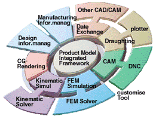

|
CADCEUS otomobil, hassas iþ, makine, ve elektrik-elektronik
endüstrileri için kavramsal tasarýmdan üretim hazýrlýðýna
kadar olan süreçte bütün olarak ürün geliþtirme poroseslerini
desteklemek için tasarlanmýþ entegre bir CAD/CAM/CAE/CG sistemidir.
Japon
kökenli bir yazýlým olan CADCEUS Japonya'da geliþtirilmiþ
ve otomotiv endüstrisinde hem ana üreticiler hem de yan sanayinin
neredeyse tamamýnýn kullandýðý yazýlým haline gelmiþtir. Bunun
ana nedeni olarak yazýlým geliþtirenlerin kullanýcýlarýn ihtiyaçlarýna
göre hareket etmiþ olmasý gösterilmektedir.
Otomotiv
endüstrisi için sunduðu eþsiz fonksiyonlar sayesinde Toyota,
Nissan, Yamaha, Honda ve Ogihara gibi devlerin vazgeçemediði
yazýlým haline gelmiþtir. Özellikle Toyota-Japonya için geliþtirilen
TOGO bunun en çarpýcý örneðidir.
CADCEUS
2002 yýlý itibariyle Japonya dýþýna açýlmýþ ve Avrupa, Çin,
Tayland gibi bölgelerde satýþa sunulmuþtur. 2005 yýlý itibariyle
de Türkiye pazarýnda sunulmaya baþlanmýþtýr.
CADCEUS'un
aðýrlýklý kullaným alaný olarak otomotiv sanayi görünse de
pres kalýp üreticileri, plastik kalýp üreticileri veya özetle
karmaþýk þekil tasarýmý yapan ve üreten sanayiler tarafýndan
da hem tasarým (CAD) hem de üretim (CAM) aþamasýnda yaygýn
olarak kullanýlmaktadýr. Stand-alone CAM sistemi olarak da
kullanýlabilen C/CAM ürünü zengin iþleme metotlarý, kuvvet
daðýlýmý, çarpma kontrolü gibi güçlü fonksiyonlarý ile yoðun
ilgi görmektedir.
CADCEUS
bir 2D/3D CAD/CAM sisteminden beklenen her türlü fonksiyonu
sunar. Mesela 2D sketch-modu, 3D katý ve yüzey modelleme,
B-spline, NURBS / Bezier tanýmlamalarýyla yüzey modelleme,
feature tanýmlamalarý, 2D-3D entegrasyonu, ölçme fonksiyonlarý,
özelleþtirilebilir kullanýcý menüleri, kullanýcýnýn kendi
kodlarýný oluþturabilmesi için SCRIPT-dili, ileri seviye fillet
seçenekleri, yüzey ofsetleme, BOM- arayüzü, vb.
-
Yüzey/Tel kafes/Katý Modelleme
- Yüzey
kalitesi kontrol etme araçlarý
- Katý
ve yüzeyler için güçlü fillet araçlarý
- Parametrik
modelleme (yüzey/katý)
- Geometrik
constraint ve geçmiþ
- Form
özellikleri ve macro yetenekleri
- Parça
özelliklerinin iteratif optimizasyonu
- 3D
datayla baðlantýlý 2D çizimler
- 3D
parça kütüphanesini geliþtirmek için araçlar
- Foto-gerçekçi
render
Opsiyonel Fonksiyonlar:
- C/Mold
Design: Parametrik plastik kalýp tasarýmý. Kendi kalýp setleriniz
veya standart kalýp setlerini (mesela HASCO) kullanarak
tasarlama.
-
C/Press Design: "Çektirerek tasarým (design-from-scratch)"
yöntemi ile parametrik pres kalýp tasarýmý veya "editing"
kullanýcý modlarý
-
C/DieFace Design: Pres kalýplarý için þekil optimizasyonu
fonksiyonlarý kullanarak parametrik proses planlama ve yüzey
geliþtirme
-
C/FMCAM: 3D - Döküm modeli tasarýmý ve iþleme
-
C/CAM-2D/3D: Yeni baþlayanlarýn kullanabileceði kadar kolay
ve uzman kullanýcýlar için çok çeþitli seçenekler sunabilen
(holder check, interference check, vb.) 2D/3D CAM modülleri
CADCEUS nötral veri formatlarýný (IGES, STEP AP203/214,
DXF, VRML, STL) kullanarak diðer sistemlerle 3D datasý alýþveriþi
yapabilir. Ayný zamanda CATIA V4/V5, Unigraphics, Parasolid,
I-deas, SolidWorks, Pro/ENGINEER gibi sistemlerle direkt
olarak anlaþabilmektedir.
Yüzey geliþtirme fonksiyonlarýndan sýk kullanýlan ve tasarýmcýlar
tarafýndan yoðun bir þekilde ihtiyaç duyulan ve tasarým sürecini
kýsaltmada önemli rol oynayan bazý fonksiyonlar:
-
Kesit alma/oluþturma
-
Flanþ uzatma
-
Budama durumu
-
Þekillerin derinlik ölçümü
-
Çekme þekillendirme deðerlendirilmesi
-
Kesitlerin gerçek uzunluklarýný ölçme
-
Eðri Uzunluklarý Farký - Alan farklarý
-
Kesit oluþturma - Eksenel dönme açýlarýnýn ölçümü
-
Koordinat sistemi tanýmlama - Kesitleri yerleþtirme
-
Ökçe oluþturma - Kaydýrma açýsý
Daha
fazla bilgi için: http://cadceus.com/e
Ýrtibat:
MET
CAD/CAM Müh. ve Bil. Sis. San. Tic. Ltd. Þti.
Tel : (312) 478 72 07
www.metbil.com.tr
info@metbil.com.tr
|